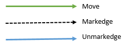

Start Node: A Please follow the ordering on the edges to see the player's path. e.g. Start with Node A and outgoing edge numbered as 1 (A - C). Next, follow the outgoing edge from C numbered as 2 (C-F) and so on. 